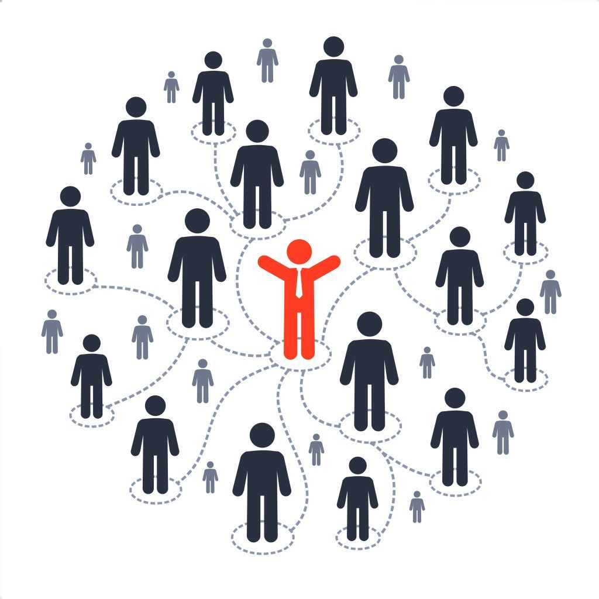

ALUMNI CONNECT
Alumni Connect is a Laxmi Charities platform that unites former beneficiaries of our educational programmes. Built on gratitude, growth, and service, it fosters reconnection, mentorship, and collaboration. Many supported students have excelled in diverse fields. One such alumnus, Mr. Lakshminarayan Duraiswamy (Laks), now Managing Director of Sundaram Home Finance, reflects: “That scholarship was not just money—it was a quiet nudge from the universe saying, Keep going.” Through networking, mentorship, volunteering, and knowledge sharing, Alumni Connect celebrates individual journeys while inspiring a shared legacy of empowerment and contribution.
MENTORSHIP PROGRAMME
Supporting scholars beyond scholarships
While financial assistance eases the burden of education, true empowerment comes from long-term, holistic support. The Alumni Mentorship Programme bridges the gap between academic funding and personal development by connecting scholarship recipients with accomplished alumni. These mentors provide guidance beyond textbooks—helping scholars navigate academic challenges, career choices, and personal growth.
How it works
Each scholar is thoughtfully matched with a mentor based on shared interests, academic background, and professional goals. Mentorship may take the form of one-on-one meetings (in-person or virtual), networking sessions, or skill-building workshops. The programme is structured yet flexible, allowing mentors and mentees to set a rhythm that works for them—whether through monthly check-ins, project collaborations, or occasional life advice.
Goals of the programme
Career Readiness: Mentors provide insights into industries, career paths, and postgraduate opportunities, helping scholars set realistic goals and build strategic roadmaps.
Confidence & Exposure: Through conversations, mock interviews, and personal stories, mentors encourage scholars to step outside their comfort zones and prepare for real-world challenges.
Life Skills Development: From communication and leadership to resilience and decision-making, the programme nurtures both personal and professional growth.
Community Building: Scholars become part of a larger, value-driven alumni network that understands their journey and is deeply invested in their success.
Why alumni mentorship matters
Alumni bring live experience, industry knowledge, and a shared sense of purpose. For scholars—many of whom are first-generation students or navigating unfamiliar systems—having a mentor who has walked a similar path can make all the difference. This programme transforms alumni connections into meaningful relationships that inspire, uplift, and empower the next generation.